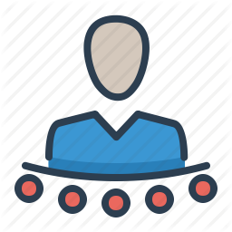

<mat-toolbar>
 <button  *ngIf="userIsAuthenticated" style="font-size: 16px;font-weight: bold;"
   type="button" mat-button (click)="drawer.toggle()">
    <mat-icon>menu</mat-icon>
    </button>
    
    <h2 style="font-weight: bold;font-size: larger;font-family: Arial, Helvetica, sans-serif;margin-left: 10px;">
     <i> Multi_Connect</i>
    </h2>
   <button *ngIf="!userIsAuthenticated" style="margin-left: 740px; word-spacing: 50px;" class="menu-button" mat-button routerLink="/login" routerLinkActive="mat-primary"><fieldset style="width:5.2%;
    height:26px;
    border:none;
    position:absolute;
    margin-top:-20px;
    font-family:sans-serif;
    font-size:21px;
    color:white;
    background-color:#2773a7;
    border-radius:15px;">login</fieldset>
  </button>
   <button *ngIf="!userIsAuthenticated" class="menu-button" mat-button routerLink="/signup" routerLinkActive="mat-primary"><fieldset style="
    height:26px;
    border:none;
    position:absolute;
    margin-top:-20px;
    font-family:sans-serif;
    font-size:21px;
    margin-left: 50px;
    color:white;
    background-color:#2773a7;
    border-radius:15px;">sign-up</fieldset></button>
   <button *ngIf="userIsAuthenticated" mat-button (click) ="onLogout()">
     <fieldset style="
    height:26px;
    border:none;
    position:absolute;
    margin-top:-20px;
    font-family:sans-serif;
    font-size:21px;
    margin-left: 780px;
    color:white;
    background-color:#2773a7;
    border-radius:15px;">Logout</fieldset></button>
    </mat-toolbar>
      <mat-drawer-container class="example-container" autosize>
      <mat-drawer #drawer class="example-sidenav" mode="side">
      <button class="button" mat-button routerLink="/home" routerLinkActive="mat-primary">
      <mat-icon style="color: #2773a7;">home</mat-icon>
             HOME</button>
      <button class="button"mat-button routerLink="/chatbox" routerLinkActive="mat-primary">
      <mat-icon style="color: #2773a7;">chat</mat-icon>
             CHATBOX</button>
      <button class="button" mat-button routerLink="/video-list" routerLinkActive="mat-primary">
      <mat-icon style="color:rgba(255, 0, 0, 0.753);">video_library</mat-icon>
             VIDEO LIST</button>
      <button class="button"mat-button routerLink="/about" routerLinkActive="mat-primary">
      <mat-icon style="color: #2773a7;">contacts</mat-icon>
              ABOUT US</button>

      </mat-drawer>
      </mat-drawer-container>
